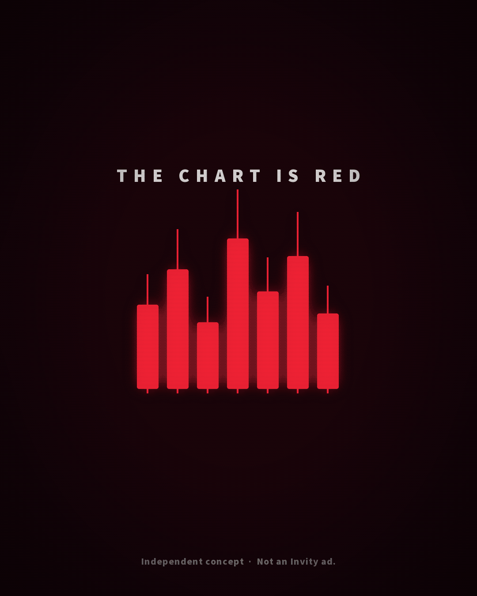

What I would publish from 10 November 2026 to the end of February 2027: one real purchase, questions people actually ask, a typo explained kindly, and a calm way to talk about leaving with your bitcoin.
Seven pieces are written out in full, so you can hear how they would sound. One of them has no date: a WAGMI film for a red-market day. Paid versions of the dated ideas are in the Funnel Ad Gallery.
This is my own independent application proposal. I don’t work at Invity, I haven’t seen any internal data, and Invity hasn’t reviewed or endorsed this page.
How to read this
A working calendar, not a wall of themes
This is the publishing plan I’d actually run from Tuesday 10 November 2026 to the end of February 2027, written as an independent application proposal. It starts from the three ideas already on the homepage and from the plan behind them: a real first purchase, questions people ask, and one meme explained kindly. It adds self-custody, what to check before confirm, recurring buying, and a calm way to talk about a moving price.
Each month has a theme and a marked “if I only had time for one” piece. Most weeks have two or three posts. November is lighter, because the first days are for listening. Every entry has a date, a primary channel, an opening line, the question it answers, and one thing to measure. Flags mark anything that needs a product review, a local adaptation, or an approved recording of the app.
Questions from Invity’s public FAQ or blog are labelled as such. Questions I am suggesting are labelled as proposed. I have not used support transcripts, and I have not invented customer quotes.
No campaign images were in the repository, in this work folder, or sent with the brief, so the walkthrough cover, the withdrawal cover and the HODL creative are typographic stills and production briefs, not pictures of the app. I would not invent a screenshot. The WAGMI film is a typographic GIF made the same way: flashy on purpose, then honest, and labelled as an independent concept.
Culture dates are here only when I could verify them. Each one has a source and a reason it earns the slot. Unsourced meme days and generic holidays are out. Newsletter angles come only from editions I actually read, listed at the end, and are attributed. Paid versions of organic ideas live in the Funnel Ad Gallery.
One more piece sits outside the dated grid. If the market has a clearly red day, I would publish a short WAGMI film: what the letters stand for, where the phrase actually came from, and the fine print that it is not a promise about the price. There is no verified anniversary to hang it on, so it waits. The ready-to-review version is in When the market is red.
Written out
Seven ready-to-review examples
These sit in the month they belong to, in full, so you can hear the voice rather than only read a headline. They are drafts for review, not approved Invity copy.
The first month is short, and the first days are mostly listening, as the homepage already says they should be. A pre-written Taproot note can go out on the 14th because it needs no app recording. The real work of the month is one honest first purchase, filmed screen by screen, in the last week.
If I only had time for one
The first-purchase walkthrough, fees-first hook (Tuesday 24 November). It answers a practical question a first-time buyer may have, gives the fees-versus-custody test its first data, and later months can reuse the footage.
The listening days
Tuesday 10 to Friday 13 November are for listening, not publishing. I’d read recent comments, public FAQ and blog language, and community threads, and agree the review route for anything about the app, fees, custody or risk. Nothing is padded into those days to make the week look busy.
Week of 10–16 November
X post
Five years ago today, Bitcoin activated Taproot.
Opening line. Five years ago today, at block 709,632, Bitcoin activated Taproot. For most people holding bitcoin, the change was invisible, and that is part of what made it work.
The question it answers. For people who already know Bitcoin: what actually changed in November 2021?
What I’d measure. Saves and considered replies, not raw reach among newcomers.
Also works as. LinkedIn, for people who already work in Bitcoin
Why this day. Verified date: Taproot activated on 14 November 2021, at block 709,632, around 05:15 UTC. A short, pre-written note that needs no app recording, so it can go out during the listening week and still give knowledgeable readers something worth keeping.
What should you check before buying your first bitcoin?
Opening line. What should you check before buying your first bitcoin?
The question it answers. If I’m curious, but I’ve never bought, what should I actually look at before I decide?
What I’d measure. Saves, and replies that name a worry.
Also works as. LinkedIn post, X
Why this day. A short, question-led post that gives a first-time buyer something useful, not a note about how the account works. Product wording would be checked before it goes out.
Instagram Story, a proposed poll
A proposed Story poll: what do you most want to see clearly?
Opening line. Before I film a first bitcoin purchase, which part do you most want to see clearly?
The proposed choices. Fees / ID / Where it’s held / Something else.
The question it answers. Which part of a first purchase is still unclear?
What I’d measure. Votes, and what people write under “Something else,” then use that to shape the 24 November walkthrough.
Also works as. A poll on X
Why this day. A proposed poll, clearly labelled as such. It gives people a reason to take part, and a way to tell us what would help, before the walkthrough is filmed.
Week of 24–30 November
Instagram Reel, about 35 seconds
Approved app recording
Product review
Local adaptation
If I only had time for one this month
A real first purchase, every screen.
Opening line. This is the screen to actually read. What I’ll pay, before I tap anything.
The question it answers. What actually happens when I buy bitcoin for the first time, and what will it cost me?
What I’d measure. Share of viewers still watching after the fee screen, and the questions people ask. First purchases from tracked links only if that tracking is available, and never as a winner call on a small sample.
Also works as. YouTube Shorts, a pinned X thread, a carousel for people who skip video, and a paid test of the two hooks
The same footage goes out with a custody-first opening as its sibling. Only the first line changes. The two openings are in the ready-to-review example.
Ready to review: the walkthrough, two openings, one film
Primary channel: an Instagram Reel of about 35 seconds, filmed on a real account, on a kitchen table, nothing staged and nothing skipped. The same edit becomes a YouTube Short, a pinned X thread, and a carousel for people who skip video. It also becomes the fees-versus-custody paid test in the Funnel Ad Gallery.
This needs an approved recording of the live app, a product review of every line that mentions fees, custody or risk, and a local check before any named market runs it. There was no supplied campaign image for a cover, so the still in the gallery is typographic, not a picture of the app.
Fees-first opening, the month’s one piece if time is short
“First time buying bitcoin. Here’s every screen, even the boring ones.”
“Yes, they ask for ID. Regulated app, part of the deal.”
“Starting small. An amount I’d be fine seeing drop for a while.”
“This is the screen to actually read. What I’ll pay, before I tap anything.”
Hold three seconds on the fee line. Do not talk over it.
“Where is it now? With a custodian, separate from the company’s money. I can send it to my own wallet any time.”
“Bitcoin can lose value. Make sure you understand the risks before deciding whether to buy.”
About 35 seconds. Wording to be checked against the live app with Invity. BitGo, fee display and withdrawal rules are from public product pages, pending verification.
The custody-first sibling
Same footage, same length, same last line about losses. Only the opening changes. The fees-first version opens on the confirm screen. This one opens on where the bitcoin is afterwards, then still holds on the fee line later in the film, so both versions remain honest about cost.
Custody-first opening
“Where is your bitcoin after you buy? With a custodian, separate from the company’s money.”
Then the same film: ID, a small amount, the fee line held for three seconds, withdraw any time, and the line about losses.
Caption, either version
First time buying bitcoin, every screen, nothing skipped.
The bit that matters is the confirm screen: what you’ll pay, shown before you tap. After that, the bitcoin is held with a regulated custodian, BitGo, separate from the company’s money, and you can withdraw it to your own wallet any time.
This is a small first amount. Bitcoin can lose value. Make sure you understand the risks before deciding whether to buy.
Independent concept, not an Invity ad. Fees and wording to be checked against the live app.
What to measure first, and how to compare
Measure watch time past the hook, and past the fee screen, plus the questions people ask. If first purchases can be tied to tracked links, look at those second, per market, and only after you have enough data to be careful: never a winner on a small sample, and not until the test has been repeated. A hook that holds attention but confuses people about fees or custody is not the one to keep.
Instagram carousel
Approved app recording
Product review
If you missed the walkthrough: the three screens that matter.
Opening line. The confirm screen, the fee line, and where your bitcoin is afterwards. Same purchase, still images, no new claims.
The question it answers. I don’t watch Reels. What should I look at?
What I’d measure. Carousel completion rate, and Story replies.
Also works as. Story frames from the same recording
Why this day. An adaptation of Tuesday’s film, not a new concept.
X post
Fourteen years ago today, Bitcoin’s first halving cut the block reward from 50 to 25.
Opening line. On this day in 2012, at block 210,000, Bitcoin’s block reward fell from 50 bitcoin to 25. The date was knowable years in advance. That is an issuance fact, not a price forecast.
The question it answers. Why is there a fixed supply, and who is deciding it this week?
What I’d measure. Saves and quote-posts from people who already know Bitcoin, and from newcomers who share it to explain the idea.
Also works as. Instagram carousel and a LinkedIn version
Why this day. Verified date: the first halving was at block 210,000, on 28 November 2012, at 15:24:38 UTC. It gives knowledgeable readers something precise to share, and it teaches issuance without talking about price.
Ready to review: the first halving, said so a newcomer can follow it
Primary channel: X, on Saturday 28 November, with a short image that is typographic, not a price chart. A longer caption can run on Instagram and LinkedIn the same day.
X post
Fourteen years ago today, Bitcoin did something no central bank does on a timetable: it cut the reward for a new block in half, on a schedule written years earlier.
On 28 November 2012, at block 210,000, the reward fell from 50 bitcoin to 25. The next cuts were already on the calendar. New bitcoin still enters the system today, just more slowly, heading toward a fixed supply of 21 million.
That is the issuance schedule. It is not a price forecast. It does not tell you what bitcoin will be worth next year, or whether you should buy it.
If you’ve ever wondered who decides how many bitcoin there are: nobody is deciding it this week. The rule was set at the start.
Source in the next post of the thread: bitcoin.org’s halving page, and any block explorer at block 210,000. No chart of past prices.
The Invity Card cashback offer mentioned in the September 2026 newsletter, with a deadline of 30 November, stays out. It is a promotion with eligibility conditions, and it belongs in Invity’s own channels, not in an urgency post on this calendar.
1–31 December
December 2026
The typo that became a philosophy.
November showed a purchase. December follows the bitcoin afterwards, and then spends a week on the anniversary of “I AM HODLING”: the typo, the joke, and the fine print. The days around Christmas are left quiet on purpose.
If I only had time for one
The meme, decoded: “I AM HODLING”, on Friday 18 December. It is the one day of the year the typo is also an anniversary, it works for newcomers and for people who already know the joke, and it is the cleanest way to talk about patience without pretending it protects anyone from losses.
Week of 1–6 December
Instagram carousel
Product review
Local adaptation
Can I move my bitcoin out of Invity?
Opening line. Can I move my bitcoin out of Invity? Invity’s public pages say you can withdraw to a hardware wallet or any Bitcoin address you control. Check the current limits, fees and conditions first.
The question it answers. Is my bitcoin stuck in the app once I buy it?
What I’d measure. Saves per reach, and comments that are genuine follow-up questions.
Also works as. X thread, and a paid version for people who already watched or saved the walkthrough
Source of the question. Written from Invity’s public FAQ and from the August 2026 newsletter’s explanation of Auto Send, not from a support transcript or a customer quote.
Ready to review: “Can I move my bitcoin out of Invity?”
Primary channel: an Instagram carousel on Tuesday 1 December. This is the first piece in the questions series. It is written from Invity’s public FAQ and from the August 2026 newsletter, and it should be labelled that way on the last slide. It is not a quote from a customer or from a support chat. A paid adaptation for people who already watched or saved the walkthrough is in the Funnel Ad Gallery.
Carousel copy
Slide 1. Can I move my bitcoin out of Invity?
Slide 2. Invity’s public pages say you can withdraw to a hardware wallet or any Bitcoin address you control. Check the current limits, fees and conditions first.
Slide 3. Auto Send can do it automatically once your balance reaches an amount you choose. The August 2026 Invity newsletter explains it, including why waiting for a set amount avoids lots of tiny, fee-heavy withdrawals. The amount in that issue was an example in Czech koruna. Other markets need their own figure, checked with Invity.
Slide 4. Moving bitcoin on the network comes with a miner fee. Check the address twice. If it is a new wallet, send a small test first.
Slide 5. Holding your own keys means looking after your own backup. That is the trade, not a catch.
Slide 6. Written from Invity’s public FAQ and newsletter, not from a support chat. Product details to be checked. This is an independent concept, not an Invity ad.
Instagram carousel
Product review
Approved app recording
Before you confirm, read three things on this screen.
Opening line. Before you confirm, read three things: the amount, the fee, and where the bitcoin will be held.
The question it answers. What should I actually check before I tap confirm?
What I’d measure. Watch time or carousel completion past the three checks.
Also works as. A Story checklist, and a cut-down X post
A short public note, plus one email to a meetup organiser
I’ll bring a twenty-minute meme quiz to one meetup in January.
Opening line. If you already run a Bitcoin meetup, I’ll bring a twenty-minute quiz in January: the typo, the first block, and one question that trips people who think they know it all. No tour, one room.
The question it answers. Community: can newcomers and long-time Bitcoiners have fun in the same room?
What I’d measure. One yes from an organiser, not likes on the public note.
Also works as. None needed
Why this day. Achievable for one person: one email, one quiz, one evening. The December note is the invitation; January is the night, if a host says yes.
Week of 7–13 December
X post
Everyone knows the typo. Fewer people have read the post.
Opening line. Everyone knows the typo. Fewer people have read the post it came from, written while the price was falling, by someone who called himself a bad trader.
The question it answers. For people who already know the HODL joke: what is the fine print?
What I’d measure. Quote-posts and follows from existing Bitcoin audiences.
Also works as. LinkedIn
Why this day. A teaser for the 18 December piece, aimed at people who think they already know it, so the anniversary post has somewhere to land.
Instagram caption, with a question sticker in Stories
If you’ve bought bitcoin with an app, what did you want to know before you confirmed?
Opening line. If you’ve bought bitcoin with an app, what did you actually want to know before you confirmed? I will use real questions, and I will label the ones I only proposed.
The question it answers. What are people quietly unsure about, in their own words?
What I’d measure. The number of distinct, usable questions, not the volume of emoji replies.
Also works as. The same prompt on X
Source of the question. A prompt, not a source. Nothing collected here is published as a quote without permission, and invented customer language stays off the calendar.
Instagram Story, three frames
Next week I’ll decode the typo. First question: what was the poster trying to type?
Opening line. Next week I’ll decode the typo. First question: what was the poster trying to type?
The question it answers. Will you watch the anniversary piece?
What I’d measure. Story replies and poll votes, used as a warm-up for the 18 December quiz.
Also works as. An X poll with the first question only
Week of 14–20 December
Instagram still, 4:5
I AM HODLING.
Opening line. I AM HODLING. A typo, dated 18 December 2013.
The question it answers. A quiet marker, two days early, so the typographic still can live in the grid.
What I’d measure. Saves of the still.
Also works as. The same still on X
Why this day. There was no supplied campaign image for this idea, so this slot uses a typographic still made for the gallery. It is a cover, not a substitute for Friday’s film.
Opening line. December 2013. The price is falling. A guy on the Bitcointalk forum, by his own account a bad trader and a few whiskies in, posts a thread titled I AM HODLING.
The question it answers. What does HODL actually mean, and what does it not mean?
What I’d measure. Completion rate, Story quiz replies, and saves — from people who already knew the joke and from people who did not.
Also works as. YouTube Shorts, an X thread that links the original post, and a three-question Story quiz
Why this day. Verified date: GameKyuubi posted the Bitcointalk thread “I AM HODLING” on 18 December 2013, at 10:03:03 in the forum’s timestamp, topic 375643.
Primary channel: an Instagram Reel of about 25 seconds on Friday 18 December, with a three-question Story quiz the same day. The typographic still can sit in the grid from the 16th. The written thread goes out on the 19th, with a link to the original Bitcointalk post.
Script, about 25 seconds
“December 2013. The price is falling. A guy on the Bitcointalk forum, by his own account a bad trader and a few whiskies in, posts a thread titled I AM HODLING.”
“It’s a typo. He meant holding. It stuck anyway.”
“Today HODL means: I’m not trying to time this.”
“The idea behind it is patience. The fine print: holding doesn’t protect you from losses. It just means you decided not to trade.”
Caption
On this day in 2013, a Bitcointalk post misspelled “holding” and accidentally named a philosophy.
I AM HODLING was written while the price was falling, by someone who called himself a bad trader. The typo stayed because the idea was simple: I’m not selling this just because it’s down.
Patience is the idea. The fine print matters too. Holding doesn’t protect you from losses. It just means you decided not to trade the swings.
If you’re new: you don’t have to use the word. If you’ve been around: today is a good day to reread the original post, typo and all.
Independent concept. Not financial advice.
Story quiz, three questions
1. What was the poster trying to type? HOLDING. HUDDLING. HOPING. HOLDING is the answer.
2. When was the post written? 18 December 2013. 3 January 2009. 31 October 2008. 18 December 2013 is the answer. The other two are the Genesis Block and the whitepaper.
3. What does HODL not mean? You’ve decided not to trade every swing. You’re protected from losses. You’re holding through a drop. “You’re protected from losses” is the answer, and the one I would take a moment to say out loud.
The original thread is Bitcointalk topic 375643, dated 18 December 2013, 10:03:03 in the forum’s timestamp.
X thread
The typo, the thread, and the fine print, written for the timeline.
Opening line. Yesterday was thirteen years since “I AM HODLING”. If you want the original thread, the typo, and the sentence about losses, it’s in this thread.
The question it answers. I don’t watch Reels. Can I still get the story?
What I’d measure. Link clicks to the original Bitcointalk post, and quote-posts.
Also works as. LinkedIn
Why this day. The written adaptation of Friday’s piece, not a new idea.
Week of 21–31 December
LinkedIn post
Bitcoin is always open. That is not a reason to buy.
Opening line. Bitcoin is always open, including this week. That is not a reason to buy, and it is not a holiday message. It is a reason not to pretend the calendar decides this.
The question it answers. Does anything about bitcoin close for the holidays?
What I’d measure. Saves, not holiday engagement. Comments that stay on the idea, not on festivity.
Also works as. Instagram caption and X
Why this day. Inspired by the April 2026 Invity newsletter’s observation that Bitcoin is always open, 24/7. It is deliberately not a Christmas or New Year post. The days from the 24th to the 27th stay empty.
Instagram carousel
Product review
These worries are natural, and they come back every four years.
Opening line. These worries are natural, and they come back every four years. A drop is not a verdict on you, and it is not a signal to buy more.
The question it answers. The price moved. Should I do something?
What I’d measure. Saves, and comments that stay in “is this normal?” territory, not in “what will it do next?”
Also works as. LinkedIn and a newsletter section, if Invity wanted one
Why this day. The opening line is from Invity’s 17 August 2026 article “Bear market, don’t panic,” attributed and used without the forecasts or “buy the discount” framing in that piece. No price prediction, and no invented newsletter copy.
If the market is red. The WAGMI GIF can run in the same week, as the culture-led companion to this carousel. It is written in advance, so it does not have to be invented on the day.
Christmas and New Year greeting posts, and any “Bitcoin is always open, so use the time to buy” twist. The 24th to the 27th are left empty on purpose, with comments still watched.
1–31 January
January 2027
You can take it with you.
January opens on the anniversary of the Genesis Block, which some Bitcoiners also mark as Proof of Keys Day. For an app that lets people withdraw any time, that is a calm invitation to try a small withdrawal, not a speech against custody. The rest of the month follows the bitcoin out, and tells the story of Bitcoin’s first days as one piece, not two insider posts in a row.
If I only had time for one
Genesis Block and Proof of Keys (Sunday 3 January). It is the most widely recognised date in Bitcoin’s history, and it lets this account say something that is both confident and true: if you bought bitcoin here, you can move it.
Week of 3–10 January
Instagram Reel, about 30 seconds
Product review
Local adaptation
Approved app recording
If I only had time for one this month
3 January 2009. The first Bitcoin block.
Opening line. On 3 January 2009, Bitcoin’s first block was mined. In it, a newspaper headline about a chancellor on the brink of a second bank bailout. Eighteen years on, today is a good day to check that you can move your bitcoin.
The question it answers. What is Proof of Keys Day, and should I take part?
What I’d measure. Completion, clicks to the withdrawal guide, and — only if it can be measured with consent — small withdrawals started by people who watched.
Also works as. X thread, LinkedIn, and a withdrawal reminder in the newsletter
Why this day. Verified: the Genesis Block’s timestamp is 3 January 2009, 18:15:05 UTC, with The Times headline in its coinbase, as recorded in Bitcoin Core. Proof of Keys has been marked on that date since 2019. The post is a calm test, not a bank-run or an attack on custody.
Primary channel: an Instagram Reel of about 30 seconds on Sunday 3 January, with a thread and a LinkedIn post the same day. If the film shows the Invity withdrawal flow, it needs an approved recording and a product review. If it does not, the typographic telling still works, and the withdrawal invitation can point to the December FAQ.
Script
“On 3 January 2009, Bitcoin’s first block was mined. In it, a newspaper headline: the Chancellor on the brink of a second bailout for banks.”
“Eighteen years on, some people mark the day as Proof of Keys: a reminder to check that you can move your bitcoin.”
“That isn’t a call to abandon every app, and it isn’t a protest. It’s a calm test. If you bought bitcoin with Invity, you can withdraw it to an address you control. Today is a good day to try a small amount, or to set up Auto Send so it happens when you’re ready.”
“If you move it, you’re also taking on the backup. Only do that when you understand the trade.”
Caption
3 January 2009. The first Bitcoin block, and a headline about a bank bailout, written into the chain.
Some people mark the anniversary as Proof of Keys Day: not a bank run, and not a speech against every custodian, but a practical question. Can you move your bitcoin?
If you bought it with Invity, you can withdraw it any time to an address you control. A small test is enough. Auto Send can do it later, once your balance reaches an amount you choose.
If you take the keys, you also take the backup. That is the trade.
Independent concept. Product details pending verification. Not financial advice.
Genesis Block timestamp: 3 January 2009, 18:15:05 UTC, as recorded in Bitcoin Core. Proof of Keys has been marked on this date since 2019.
Instagram carousel
Product review
Local adaptation
Approved app recording
Auto Send, when you already know where you want the bitcoin to go.
Opening line. Auto Send can move your bitcoin out of the app once your balance reaches an amount you choose. It is a withdrawal habit, not a trading strategy.
The question it answers. Can I set it up so bitcoin leaves the app on its own?
What I’d measure. Saves, and clicks toward Auto Send settings if those can be measured.
Also works as. A how-to in the newsletter, especially for people who already hold a hardware wallet
Why this day. Built on the August 2026 Invity newsletter, which explains Auto Send and why waiting for a set amount avoids tiny, fee-heavy transactions. That issue used a Czech koruna example; other markets need a local figure, pending verification.
Instagram carousel
Product review
Can I send my bitcoin straight to a Trezor?
Opening line. Can I send my bitcoin straight to a Trezor? If you mean “can I withdraw to an address my hardware wallet gives me?”, the public answer is yes. Check the address twice, and send a small test first.
The question it answers. For people who already own a hardware wallet: can the bitcoin go there directly?
What I’d measure. Clicks to Invity’s hardware-wallet withdrawal guide, and follow-up questions that show what is still unclear.
Also works as. X post
Source of the question. A proposed question, not a customer quote. It is on the calendar because Invity already publishes a hardware-wallet withdrawal guide, so the public answer can be checked rather than invented.
Week of 11–17 January
X thread
The first days Bitcoin was actually used.
Opening line. On 11 January 2009, Hal Finney tweeted “Running bitcoin.” The next day, in block 170, he received 10 bitcoin from Satoshi. The first days were a test. A first purchase can be one too.
The question it answers. Who actually used Bitcoin first, and is it normal to start with a tiny amount?
What I’d measure. Saves and quote-posts. This is meant to be worth keeping for people who already know the story, and clear for people who do not.
Also works as. LinkedIn, and an Instagram carousel
Why this day. Two verified days, told as one piece so January does not become a run of insider anniversaries. Hal Finney’s “Running bitcoin” tweet is dated 11 January 2009. The first person-to-person payment is widely recorded as 12 January 2009, in block 170.
Instagram Reel, Czech captions on the existing walkthrough
Local adaptation
Product review
Approved app recording
The same first purchase, with the Czech ID step in view.
Opening line. A first purchase in Czechia can use Bank iD. That route is Czech-only, and it should be shown only where it is true.
The question it answers. What is different about a first setup in Czechia?
What I’d measure. Completion on the Czech-captioned version, compared with the English one, if both run.
Also works as. A Czech caption version on X, if the account runs Czech at all
Why this day. Localisation where it is genuine. The July 2026 newsletter and a 27 July 2026 blog post describe Bank iD verification as Czechia-only. A native Czech check of the captions is needed; I would not publish legal or product wording on a guess.
Week of 18–24 January
Instagram Story and a short feed post
Product review
If you want a routine, I’ll explain Auto Buy in February, including what it does not do.
Opening line. If you want a routine, I’ll explain Auto Buy in February — including what it does not do. If you would rather buy once, or not at all, you can skip it.
The question it answers. Is there a way to buy a little on a schedule, and is that for me?
What I’d measure. Replies that ask for the explanation, which tells us whether February’s piece has an audience.
Also works as. A newsletter mention
A twenty-minute quiz at one meetup, or a written quiz in Stories if no host said yes
Local adaptation
The typo, the first block, and one question that trips people who already know Bitcoin.
Opening line. Ten minutes of questions from the last two months, including one that trips people who already know the joke. Stickers, not prizes.
The question it answers. Community: can this account be useful in a room, not only in a feed?
What I’d measure. Attendance if it is live; Story completion if it is written. A useful product question afterwards counts more than a crowd.
Also works as. A Story recap the next day
Why this day. The follow-up to the 5 December invitation. If no organiser said yes, the written quiz still works, and one person can run it.
Week of 25–31 January
Instagram carousel
Product review
Self-custody, without the sermon.
Opening line. Self-custody means you can move your bitcoin. It also means you can lose the keys. That is the trade, and it is worth taking only when you understand both sides.
The question it answers. Should I take my bitcoin out of the app?
What I’d measure. Saves, and comments that are about backups and small test sends, not about loyalty to an app.
Also works as. X thread
The existing walkthrough, with Spanish captions
Local adaptation
Product review
Approved app recording
The same first purchase, in Spanish.
Opening line. The Invity app has a Spanish interface. This is the November walkthrough, captioned in Spanish, with the same fee screen and the same warning about losses.
The question it answers. Can I watch this in Spanish?
What I’d measure. Completion on the Spanish version compared with the English one.
Also works as. A Spanish Reel if a new recording is approved
Why this day. The app lists Spanish among its interface languages. Service availability in any named Spanish-speaking market still needs confirmation, so this is a language version, not a claim that Invity operates everywhere Spanish is spoken.
The Lightning Network paper’s anniversary on 14 January (the paper is from 14 January 2016). The date is real, but January already has the Genesis Block and the first transactions, and a third insider anniversary would crowd out the beginner pieces.
1–28 February
February 2027
The routine, and the fine print.
February is for recurring buying, said plainly, and for the unglamorous work that makes a first purchase safer: cost basis as a record, not a promise; scams; and one carefully labelled creator pilot in a single market. The month ends by saying that a routine does not suit everyone.
If I only had time for one
Auto Buy, without the sales pitch (Tuesday 2 February). It is the natural next conversation after a first purchase, it needs the fine print said out loud, and the placement matters as much as the copy: owned channels first, paid social only as a limited fallback.
Week of 1–7 February
Instagram carousel, and — preferably — a newsletter or in-app note for people who already made a first purchase
Product review
Local adaptation
If I only had time for one this month
Auto Buy, without the sales pitch.
Opening line. Auto Buy lets you choose an amount and a rhythm. It does not time the market, it does not promise a better price than buying once, and it does not protect you from losses.
The question it answers. Does buying a little on a schedule make sense for me?
What I’d measure. On an owned channel: Auto Buy set-ups among people who read it, and an honest “this isn’t for me” reply is also a useful result. On a paid test: set-ups among existing purchasers, with the same small-sample caution as the rest of this site. Click-through rate is not the main measure.
Also works as. A limited paid test only as a fallback, and only to people who have already bought, if that is allowed
Ready to review: Auto Buy, without the sales pitch
Primary channel: a newsletter or in-app note for people who have already made a first purchase. The same slides can live on Instagram for anyone who wants the explanation. Paid social is a fallback, and only to people who already bought, if consent, platform rules and the data actually allow it. That placement is explained with the matching card in the Funnel Ad Gallery.
Daily buying as a frequency comes from the September 2026 newsletter and still needs a check against the live app. Nothing here uses Turbo Buy, card cashback, moving averages, or a promise of better results.
Carousel, or newsletter sections
1. Auto Buy, without the sales pitch.
2. What it does: you choose an amount and a rhythm — daily, weekly, every two weeks, or monthly — and the app buys that amount on the schedule. A daily option was added in September 2026, pending a check against the live app.
3. What it does not do: it does not time the market. It does not promise a better price than buying once. It does not protect you from losses.
4. Regular buying is a way to keep a decision you already made. It is not a virtue, and it does not suit everyone.
5. If you would rather buy once, or not buy at all, that is fine.
6. If you have just made a first purchase, this is better as a note in the newsletter or the app than as an ad in a stranger’s feed. A paid version, if it runs at all, should only reach people who already bought, and only if that is allowed.
Independent concept. Not financial advice. Product details pending verification.
Why this is not, first, a paid ad
Auto Buy is a decision you make after you already understand a purchase, not a reason to buy for the first time. A person who has just completed a first transaction is in the newsletter, or in the app, and can be spoken to there without paying for another impression. Remarketing to purchasers is a proposed setup. It would depend on consent, on what the platform allows, and on whether Invity actually has that audience to use. I am not describing an audience Invity already runs.
Instagram carousel
Product review
Local adaptation
Cost basis: the number that records what you paid, not what you will earn.
Opening line. Your cost basis is what you paid, on average, for the bitcoin you hold. It is a record. It is not a forecast, and it is not tax advice.
The question it answers. For people who already hold bitcoin: how do I know what I actually paid?
What I’d measure. Saves, and replies that say the explanation helped someone find the number. This is not a prompt to buy more.
Also works as. A newsletter Edu corner, or LinkedIn
Why this day. Inspired by the April 2026 newsletter’s Edu corner on cost basis. Any figures in the post would be hypothetical. Tax treatment changes by country, so local versions need a review and should not be written as advice.
Week of 8–14 February
Instagram carousel
Local adaptation
Product review
Five scams that target people buying bitcoin for the first time.
Opening line. If someone hurries you, asks you to move bitcoin to “keep it safe”, or messages you as support, stop. Real support will not ask you to send bitcoin, or to share your recovery words.
The question it answers. How do I tell a real message from a scam?
What I’d measure. Shares and saves. This should be the piece people pass on.
Also works as. Stories, and a Short that picks one scam only
Why this day. Drawn from the strategy page’s scams creative and from Invity’s 25 June 2024 article on phishing tactics. I have used it as a public source, not as a list of incidents I have seen. Scams differ by market, so each language version needs a local check.
The HODL piece or the walkthrough, with German captions
Local adaptation
The typo, in German, with the same fine print.
Opening line. The Invity app has a German interface. The HODL story does not change. Holding still does not protect you from losses.
The question it answers. Can I read this in German?
What I’d measure. Completion on the German version compared with the English one.
Also works as. A German LinkedIn version of the HODL anniversary post, if it still earns a slot in the grid
Why this day. The app lists German. Compliance tone in German-language finance posts can be tighter, so product and risk wording would be checked, not translated on a guess, and no market-specific legal claim would go out unverified.
Week of 15–21 February
A paid, clearly labelled first-setup film on one creator’s account
Approved app recording
Product review
Local adaptation
My first bitcoin setup, start to finish.
Opening line. A first setup, in the creator’s own words, from a brief they did not write alone: fees, custody, withdrawals, and the line about losses stay in.
The question it answers. What does a first purchase look like from someone like me?
What I’d measure. Completion and the questions in the comments, not view count alone. Run in one market first, so someone can actually watch what happens.
Also works as. A recut on Invity’s account, if the creator agrees, still labelled
Why this day. The creator idea from the strategy page, kept small enough for one person to brief and review. One market, paid, labelled. Not a tour, and not every market at once.
The walkthrough with Polish captions, only after the in-app language is confirmed
Local adaptation
Product review
Approved app recording
The first-purchase walkthrough, captioned in Polish, in the language the app actually shows.
Opening line. Invity’s marketing site has Polish. That is not the same as a Polish in-app interface. This version is filmed in the language the app really shows in Poland, with Polish captions around it, once that is confirmed.
The question it answers. Can I follow this in Polish?
What I’d measure. Run only after the UI language is confirmed. Until then this stays a planned note, not a published claim.
Also works as. None, until that confirmation
Why this day. A localisation note that is honest about the gap between a marketing-site language and the app itself. No Polish in-app interface is claimed here.
Week of 22–28 February
Instagram caption and a short carousel
Product review
A routine is a choice, not a virtue.
Opening line. A routine is a choice, not a virtue. If you would rather buy once, or not buy at all, that is fine. Regular buying does not suit everyone, and it does not protect you from losses.
The question it answers. Do I have to set up Auto Buy to be “doing it right”?
What I’d measure. Comments that show fewer people leaving with “so I should set up Auto Buy?” as the only takeaway.
Also works as. LinkedIn, and a close to the Auto Buy newsletter note
Instagram carousel, or a simple quiz in Stories
Four questions from four months, including one that trips people who already know Bitcoin.
Opening line. Four questions from the last four months. One of them is easy if you were there in 2013, and easy to miss if you only know the merch.
The question it answers. What did we actually learn, and can this be fun for people who already know the answers?
What I’d measure. Completions and shares, especially from people who already follow Bitcoin accounts.
Also works as. The same four questions at a meetup if a host wants a second night
Why this day. A light closer, and a second community idea that one person can run without a new production cycle.
Valentine’s Day, and any unsourced “Bitcoin holiday” in February. No meme or protocol anniversary in this month had a source solid enough to earn a slot.
Where language actually matters
A few localisation notes, only where they’re real
The Invity app lists Czech, English, German, Spanish and Portuguese in its interface. The marketing site’s language list is broader, including Polish and Hungarian. I have not treated a marketing-site language as proof of an in-app language, or of service in that country. Market-specific product or legal claims stay pending verification.
Czechia is the one market with a clearly documented extra step: Bank iD, described as Czech-only in the July 2026 newsletter. That is why the mid-January walkthrough caption is Czech first. German gets a February caption version of the HODL piece, with a tighter review of risk wording. Spanish gets late-January captions on the existing walkthrough. Polish is planned only after the in-app language in Poland is confirmed; until then I would not claim a Polish app interface. I can check Hungarian copy myself, but whether Invity serves Hungary is still to be confirmed, as the main site already notes.
Standby
When the market is red
This one has no date on purpose. WAGMI has no verified anniversary the way “I AM HODLING” does, and a red day cannot be booked in advance. The piece is written now so it can go out when the chart is clearly down, without being invented in a hurry.
Whenever the market is sharply red
Instagram, a looping 4:5 GIF
The chart is red. Someone will say WAGMI.
Opening line. The chart is red. Someone will say WAGMI.
The question it answers. What does WAGMI actually mean, and what does it not mean when the price is falling?
What I’d measure. Saves, and whether comments stay with the story and the fine print, not with “what happens next.”
Also works as. A Reel with the same pictures, a looping Story, and an X post
Why this day. It isn’t a day. The film is ready in advance so a red session does not force a rushed post. If that session falls in the last week of December, it can sit next to the 28 December carousel.
Primary channel: a looping 4:5 Instagram GIF, about five seconds, that can also run as a Reel or a Story. The same story is in the caption. There is no product claim in this piece, so it does not need an app recording. It does need a check that the fine print is still on the last frames, not only in the caption, which people may never read.

A typographic 4:5 GIF, labelled as an independent concept. It is flashy on purpose, then it calms down. If you prefer no motion, the last frame is also saved as a still.
What happens in the GIF. It opens on an abstract red chart, with no prices, and the line “The chart is red.” It slams into the word WAGMI, spells out “We’re all gonna make it,” and settles on two lines: “A gym phrase crypto borrowed. Not a promise about the price.”
Caption
The chart is red. Someone will say WAGMI.
WAGMI means “we’re all gonna make it.” It sounds like a promise about the price. It didn’t start that way.
Around 2010, an Australian bodybuilder, Aziz “Zyzz” Shavershian, used to tell people in gym and internet communities that they were all going to make it. He died in 2011, in Thailand, aged 22. The words stayed in fitness circles. Crypto borrowed them later, especially on days when everything looked lost.
By then the letters had become a kind of group hug in acronym form. The opposite is NGMI, “not gonna make it,” often aimed at anyone who sells or steps back.
Here is the fine print, in the same spirit as the HODL piece: WAGMI is camaraderie. It is not a forecast. It does not mean the red day is a discount, and it does not protect anyone from losses. If the phrase helps someone feel less alone, that is one thing. If it is used as a reason to buy, or to stay in, that is another, and this account would not do that.
Origin reported by Vice, 4 May 2022. His death was reported by the Sydney Morning Herald, 11 August 2011. Links are in the sources section.
If it needs a spoken version instead of a silent GIF, the cuts are:
0–2s. The red chart, no prices. “The chart is red.”
2–4s. The slam. “Someone will say WAGMI.”
4–6s. The letters open out. “We’re all gonna make it.”
6–9s. The origin, said plainly. “It started in a gym, not on an exchange. A bodybuilder said it to people who felt behind. Crypto borrowed it.”
9–13s. The turn. “On a red day it can sound like comfort, or like a forecast. It is not a forecast. It does not protect anyone from losses.”
Sources
Why these dates, and which newsletters I actually read
Each culture date below earned its slot because the source is public and specific, and because the day helps tell one of the ideas already on this site. I also checked dates I then left out, so the gaps are deliberate.
Taproot activation, 14 November 2021. Activated at block 709,632, around 05:15 UTC. Reported at the time by The Block and visible in any block explorer. Source
First halving, 28 November 2012. Block 210,000, 28 November 2012, 15:24:38 UTC. The block reward fell from 50 to 25 BTC. Described on bitcoin.org and in the Bitcoin Wiki, and visible in block explorers. Source
“I AM HODLING”, 18 December 2013. Bitcointalk thread by GameKyuubi, topic 375643, dated 18 December 2013, 10:03:03 in the forum’s timestamp. Source
Genesis Block, 3 January 2009. The Genesis Block’s nTime is 1231006505, which is 3 January 2009, 18:15:05 UTC, as set in Bitcoin Core’s chain parameters. The coinbase contains the headline “The Times 03/Jan/2009 Chancellor on brink of second bailout for banks.” Source
Proof of Keys, marked on 3 January since 2019. Started by Trace Mayer as a yearly reminder to move bitcoin to wallets people control. It shares a date with the Genesis Block; on this calendar the two are told as one calm piece, not as a protest. Source
“Running bitcoin”, 11 January 2009, and the first person-to-person transaction, 12 January 2009. Hal Finney’s tweet is dated 11 January 2009. The first person-to-person payment is widely recorded as Satoshi sending 10 BTC to Hal Finney on 12 January 2009, in block 170. Source
WAGMI, an undated standby. WAGMI stands for “we’re all gonna make it.” The phrase is widely traced to the Australian bodybuilder Aziz “Zyzz” Shavershian, around 2010. Vice (Ekin Genç, 4 May 2022) reports the gym origin and how crypto later adopted the letters; contemporary coverage in the Sydney Morning Herald (11 August 2011) reported his death in Thailand, aged 22. There is no single verified anniversary in the way “I AM HODLING” has one, so this piece is not tied to a calendar day. Vice · Sydney Morning Herald
Dates I researched and did not use as slots
The whitepaper is dated 31 October 2008, just before this window. The Lightning paper is dated 14 January 2016; January was already full. Satoshi’s last public message is often dated in different years in different places, including an aside in the April 2026 newsletter that I would not repeat. There is no reliable source I would hang a “Bitcoin holiday” on in late December or in February, so Christmas, New Year and Valentine’s Day are out. Gold confiscation and the date sometimes given as Satoshi’s birthday fall in April, outside this plan.
Newsletters and articles I read
Read on 10 November 2026, on the Invity blog. I have not invented newsletter copy, and I have not treated unread editions as read.
April 2026 newsletter. Used for the cost-basis piece and for the observation that Bitcoin is always open. I did not use the issue’s aside about Satoshi’s last message, because the year it gives does not match the usual record, and I did not turn “always open” into a reason to buy.
July 2026 newsletter. Used for the Czech-only Bank iD note, with the related 27 July 2026 blog post. A mention of Telegram and self-custody in that issue is treated as news, not as an Invity product claim.
August 2026 newsletter. Used for Auto Send, including the idea of waiting for a set amount so withdrawals are not tiny and fee-heavy. The koruna example stays a Czech-market illustration, pending verification. Autumn events listed there were already in the past when this calendar was written, so they are not on it.
September 2026 newsletter. Used only for the fact that a daily frequency was added to Auto Buy, pending a check against the live app. I did not use moving averages, a golden cross, Turbo Buy, or the card cashback deadline as angles.
Bear market, don’t panic, 17 August 2026. Used for the line “These worries are natural, and they come back every four years.” I did not use the forecasts or a “buy the discount” frame.
I looked at the Invity blog index on 10 November 2026. I did not treat the May or June 2026 newsletter posts as read-through editions, so nothing on this calendar is built from their body copy. Public articles I did use as background, besides the issues above, include Invity’s phishing guide (25 June 2024) and the public hardware-wallet withdrawal guide.